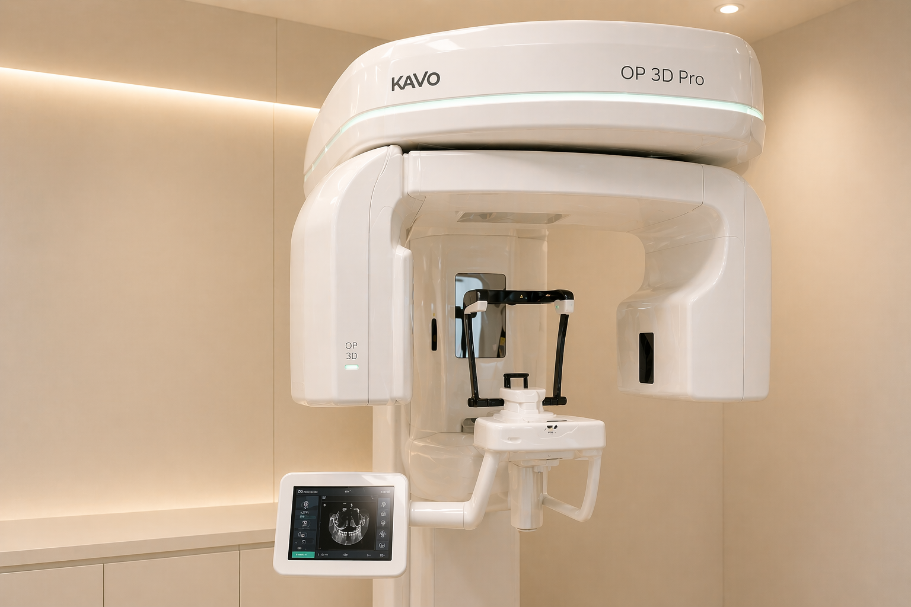
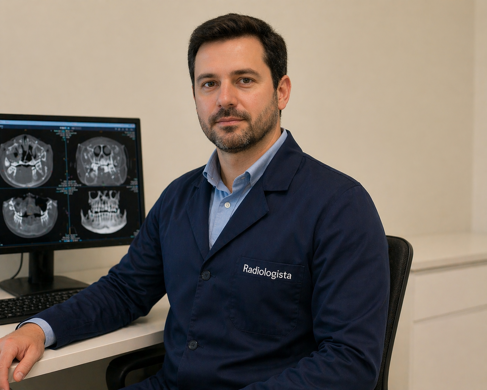

CENTRO DE DIAGNÓSTICO AVANÇADO
Radiologia digital integrada à clínica
A clínica conta com estrutura própria de radiologia odontológica, permitindo a realização de exames no mesmo local do atendimento.

Diagnóstico mais preciso para tratamentos mais seguros
A radiologia digital é uma aliada essencial no diagnóstico e no planejamento dos tratamentos. Com imagens mais detalhadas, é possível identificar alterações com maior precisão e definir a melhor conduta para cada caso.
Equipe RD Radiologia
Profissionais preparados para cada etapa do exame.
A RD Radiologia conta com profissionais responsáveis pelo atendimento e pela realização dos exames,
garantindo organização, agilidade e qualidade em todo o processo.
Vanessa
Secretária RDAgilidade nos laudos.

Weglinton
Tecnico Radiologista] RDPrecisão e técnica 3D.
Mais facilidade com a radiologia ao lado da clínica
A RD Radiologia, localizada ao lado da clínica e sob a mesma gestão, facilita o acesso aos exames e reduz o tempo entre diagnóstico e início do tratamento, trazendo mais comodidade para o paciente.
Tomografia Cone Beam & Impressão 3D
Transformamos diagnósticos em mapas tridimensionais, permitindo planejamentos cirúrgicos impecáveis e seguros.

Impressão 3D & Biocompatibilidade
Agilidade e precisão na criação de guias cirúrgicos, modelos ortodônticos e próteses temporárias com ajuste perfeito e acabamento de alta fidelidade.
Exames realizados:
Radiografia Panorâmica
Imagem geral da arcada dentária para avaliação inicial.
Tomografia
Exame tridimensional para diagnósticos mais detalhados.
Documentação
Exames utilizados no planejamento ortodôntico.
Modelos 3D
Impressão para apoio no planejamento odontológico.